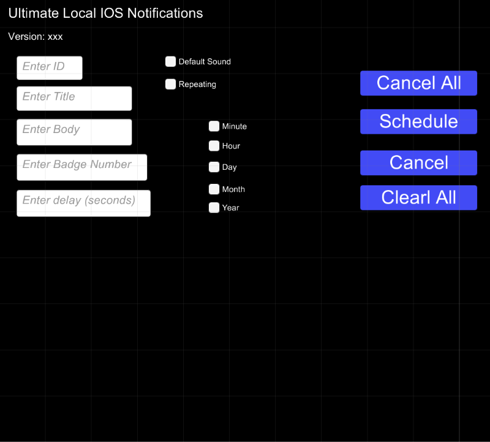
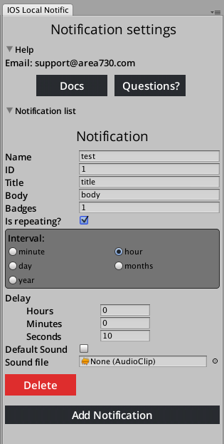

Installation¶
Import this plugin to your Unity project
Now you could build and run application to test. But please read all documentation!
Create IOSNotification With Code¶
Schedule simple notification¶
The package contains code samples in Assets/Area730/Notifications/Examples/Scripts folder. Also you can build and run example scene Assets/Area730/Notifications/IOS/Examples to test notification.
The notifications are created using IOSNotificationBuilder class. Its constructor takes 3 arguments - id of the notification, title and notification text.
Next example example shows how to schedule the notification that will be shown immediately:
int id = 1;
string title = "Notification titile";
string body = "Notification body";
IOSNotificationBuilder builder = new IOSNotificationBuilder (id, title, body);
IOSNotifications.scheduleNotification(builder.build());
Schedule delayed notifications¶
If you want to set delay - call builder.setDelay(int milliseconds) or builder.setDelay(System.TimeSpan delayTime). The next example shows how to create a notification that will be shown in one hour:
int id = 1;
string title = "Notification titile";
string body = "Notification body";
// Show notification in one hour
TimeSpan delay = new TimeSpan(1, 0, 0);
IOSNotificationBuilder builder = new IOSNotificationBuilder (id, title, body);
builder.setDelay(delay);
IOSNotifications.scheduleNotification(builder.build());
Repeating notifications¶
To set repeating notification you should set notification as repeating and set the time interval. According to Apple documntaion it is allowed to repeat notification every:
- Minute
- Hour
- Day
- Month
- Year
int id = 1;
string title = "Notification titile";
string body = "Notification body";
// Show notification in one hour
IOSNotificationBuilder builder = new IOSNotificationBuilder (id, title, body);
builder.setInterval(IntervalUnits.HOUR);
IOSNotifications.scheduleNotification(builder.build());
Set Up Badge Number¶
int id = 1;
string title = "Notification titile";
string body = "Notification body";
// Show notification in one hour
IOSNotificationBuilder builder = new IOSNotificationBuilder (id, title, body);
builder.setNumber(3);
IOSNotifications.scheduleNotification(builder.build());
Settings custom sound¶
Now its supported only wav format sound notification.
Next section show how to use custom sound for notification
IOSNotificationBuilder builder = new IOSNotificationBuilder (id, title, body);
builder.setSound("notification_sound");//without wav extention
IOSNotifications.scheduleNotification(builder.build());
*Important When you set up sound via script please add source file to the xCode project into *Data/Raw folder manually.* If you change audioclips via Editor please check Assets/StreamingAssets and Assets/Plugins/IOS/Notifications folders to delete old clips.
Cancel notification by id (both repeating and one-time)¶
//cancel notification with id 7
IOSNotifications.cancelNotification(7);
Cancel all notification¶
//cancel all notification
IOSNotifications.cancelAll();
Clear shown notifications¶
IOSNotifications.clearAll();
Updating notifications¶
To update one-time or repeating notification, schedule a notification with updated data and with ID of the notification you want to update.
Show IOS toast notification¶
IOSNotifications.showToast("Download completed");
Create IOSNotification With Visual Tool¶
To open visual tool to create notification go to Window->IOS Local Notification
Next example shows scheduling of the notification created in editor with name notificationOne
string notificationName = "notificationOne";
// Method returns builder so you can config your notification afterwards if you want
IOSNotificationBuilder builder = IOSNotifications.GetNotificationBuilderByName(notificationName);
// If notification with specified name doesn't exist builder will be null
if (builder != null)
{
IOSNotification notif = builder.build();
IOSNotifications.scheduleNotification(notif);
}
Push Notification with OneSignal integration¶
Add CrossPlatformPushNotificationController.cs to some object in your scene
and paste id from created application in onesignal. For more information go here
Modifying plugin¶
All native source code is holding in Assets/Plugins/IOS/Notifications
Other¶
All classes are located in Area730.Notifications.IOS namespace
Example scene with sample code is included in the package (Assets/Area730/Notifications/Examples)